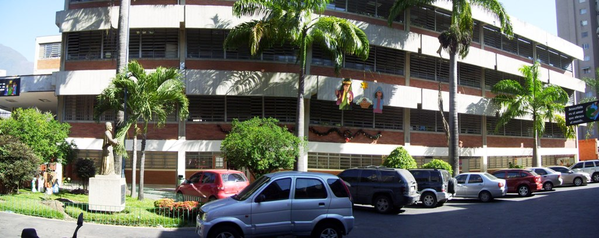
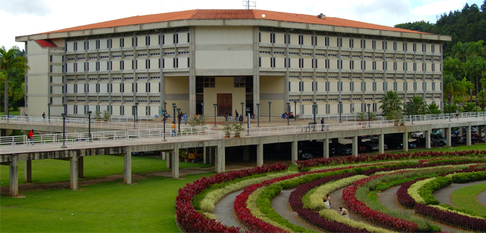
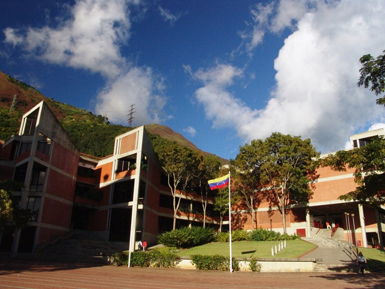
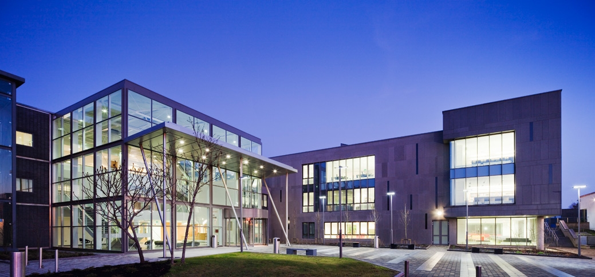

Colegion San Agustin El Marques (CESA)
Location: Caracas-Venezuela
Website: colegiosanagustinelmarques.wordpress.com
Colegio San Agustin El Marques is a recognized secundary school at east of Caracas.
Jose Leonardo first signed up for this school in 1996 to take up 2nd year and
continued his studies until he got graduated in 2K.
This School is a Chistian dogma secundary school, run by an Augutinian priest group since 1963.
Colegio San Agustin El Marques is well recognized for its highly demanding programs in
Biology, Maths and Literature.

Universidad Simon Bolivar (USB)
Location: Caracas-Venezuela
Website: www.usb.ve
After Jose Leonardo finished highschool, he enrolled himself in the Unversity in September 2K.
The Universidad Simón Bolívar was his first option as he demostrared interest in the Mechanical Engineeering School.
Mechanical Engineers graduated from Universidad Simón Bolívar are recognized with a professional
profile to successfully develop and design different sorts of systems such as mechanical, hydraulic or pneumatic systems.
In addition, they are prepared to undertake projects related to power generation, manufacturing processes,
HVAC and any other regarding mechanics within the industrial sector.
Jose Leonardo graduated from the Mechanical Engineering School in 2006 after meeting all the academic
requirements, including a 6 month internship, which took place in Minera Loma de Níquel, within the
Mechanical Maintenance department.

Universidad Metropolitana (UNIMET)
Location: Caracas-Venezuela
Website: www.unimet.edu.ve
In 2008, a new opportunity showed up. Jose Leonardo made the decision to boost his professional career in Toyota
by taking up a postgraduate degree in Management Engineering, which perfectly matched his needs within the organization.
The Universidad Metropolitana is a well known College in Caracas with strong pensums for managerial programs.
The Master in Management Engineering offered by the Universidad Metropolitana is addressed to professionals from different engineering branches.
Students are deeply introduced into the modern management style by going through concepts such as finance, human resources, strategic management,
international business and economic engineering.
This postgraduate study aims at turning these professionals into modern-minded managers in order to effectively control production, operations,
projects, logistics, and other areas within different sorts of business.
Limerick College of Further Education (LCFE)
Location: Limerick-Ireland
Website: www.lcfe.ie
As computing programming became a very important matter within Jose Leonardo's life (it
stopped from being just a hobby, but his new passion instead), the necesity to get involved
in formal education was essential.
The computer programming for beginers course offered by LCFE is considered as an itroduction to structured
programming by learning Java programming language and the use of Eclipse IDE.

Institute of Technology Sligo (ITSligo)
Location: Sligo-Ireland
Website: www.itsligo.ie
Motivated by his interest in computer programming and the ilusion of becoming genuine, real programmer,
JL started to do some research regarding third level education programmes in Computing.
After some google search and a lucky strike,he found a new program that has been offered by IT Sligo since 2014,
which met the flexibility and pensum JL had been looking for.
This academic program is part of the Springboard+ initiative (run by the Higher Education Authority) which is aimed at offering courses,
degrees and masters in areas with job opportunities within the Irish economy.
In this particular case, a conversion program is offered to include professionals from other areas into the Information and Communication Technologies sector.
Software and web development, database management, server set up and maintenance, computer architecture and secure converged networking
are some of the modules this Level 8 degree is made up of.
JL finished this higher diploma in 2016 with outstanding results achieving a first class honours award, and even better, obtaining
a qualification that would lead him to a computer related job.